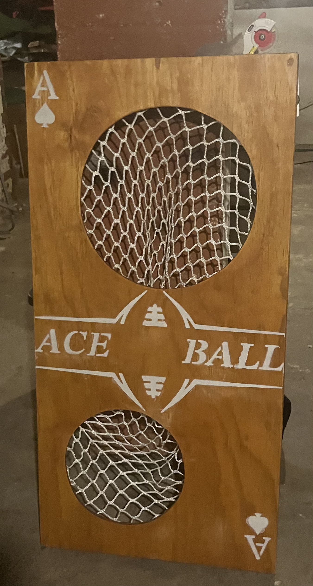
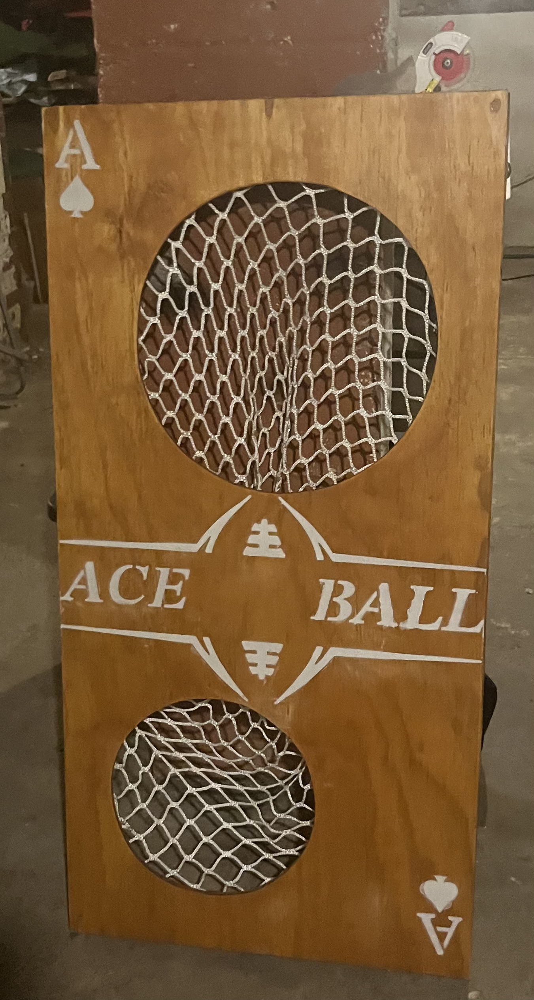

About Ace Ball
Founded in 2023
By Aaron Czerny
Growing up, I was always the quarterback—and throwing a football has been second nature to me for as long as I can remember. As a kid, I’d spend hours in my yard challenging myself to hit targets like trees and props with perfect throws. That love for accuracy and competition never left.

In 2023, I found myself doing the same thing again—just throwing around and trying to hit targets—when the idea came to me: what if I built something for this? I started creating a cornhole-style board built for football throwing, then eventually finished my first prototype and realized it had the potential to become a real game. The concept was inspired by the competitive backyard games my friends and I always played—mixing elements of cornhole, beer die, pong, and football.
 

On February 27, 2024, I completed my first full set of boards. After finding the perfect ball—now known as the Ace Ball—the game came to life with the bounce and action that made it truly unique. Through nonstop testing and upgrades, the game evolved from one hole to two, creating a more football-like experience with both field goal and touchdown scoring opportunities. After multiple prototypes and improvements through 2025, the final design and measurements are now set—and Ace Ball is ready for the official version.